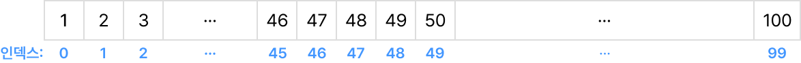

개념 학습
이진 탐색
이진 탐색은 정렬된 데이터에서 특정값을 효율적으로 찾기 위한 알고리즘이다.
데이터의 중간값을 확인하고, 찾는 값이 중간값보다 작으면 왼쪽 절반을, 크면 오른쪽 절반을 대상으로 다시 탐색하는
과정을 반복한다.
이진 탐색의 비교 횟수
1~100의 정수 데이터에서 이진 탐색으로 47을 찾을 때가 최악의 경우이다. 47을 탐색할 때 비교 횟수를 세어 보자.

- 1 mid=(0+99)/2=49(소수점 이하 버림). 인덱스 49의 값은 50이고 찾는 값이 50보다 작으므로 왼쪽 부분을 검색한다.
- 2 mid=(0+48)/2=24(소수점 이하 버림). 인덱스 24의 값은 25이고 찾는 값이 25보다 크므로 오른쪽 부분을 검색한다.
- 3 mid=(25+48)/2=36(소수점 이하 버림). 인덱스 36의 값은 37이고 찾는 값이 37보다 크므로 오른쪽 부분을 검색한다.
- 4 mid=(37+48)/2=42(소수점 이하 버림). 인덱스 42의 값은 43이고 찾는 값이 43보다 크므로 오른쪽 부분을 검색한다.
- 5 mid=(43+48)/2=45(소수점 이하 버림). 인덱스 45의 값은 46이고 찾는 값이 46보다 크므로 오른쪽 부분을 검색한다.
- 6 mid=(46+48)/2=47(소수점 이하 버림). 인덱스 47의 값은 48이고 찾는 값이 48보다 작으므로 왼쪽 부분을 검색한다.
- 7 mid=(46+46)/2=46(소수점 이하 버림). 인덱스 46의 값은 47이고 원하는 값을 찾았으므로 종료한다.
→ 데이터가 100개이고 최악의 경우일 때, 비교 횟수는 7이다.